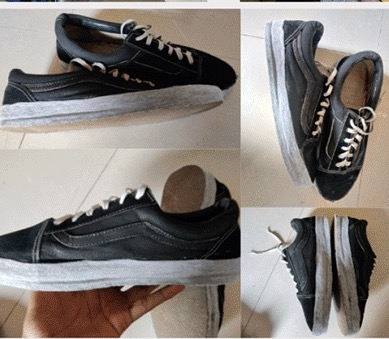
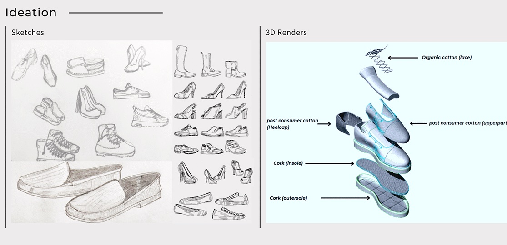
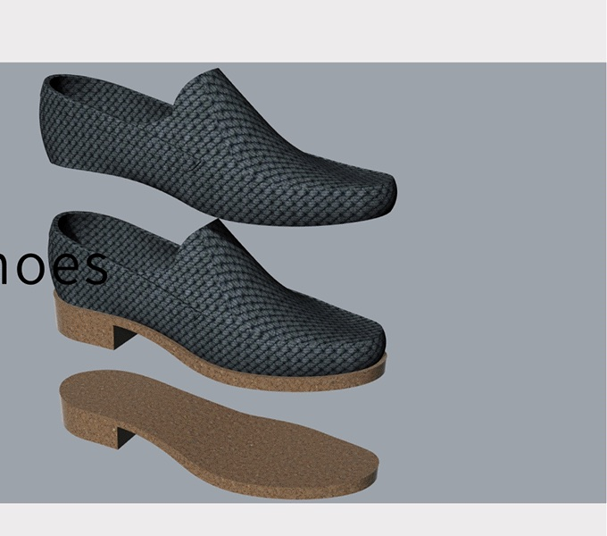
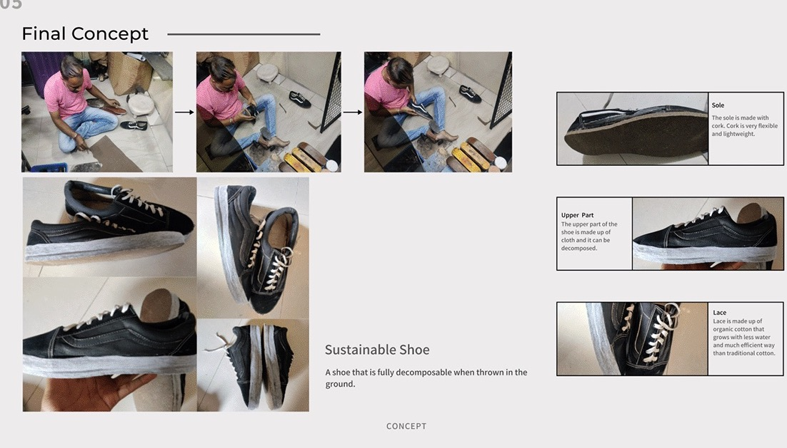

Research
Sustainability means meeting the needs of current generations without compromising those of future ones, balancing economic growth, environmental care and social well-being. Biodegradable footwear uses materials that compost at the end of life: natural and synthetic biodegradable polymers and blends. The materials in a completely biodegradable shoe take within six months to decompose.
The cradle-to-cradle model separates biological nutrients, which return to the soil, from technical nutrients, which are recycled into the next product. One idea from the research: shoes sold at a low rate, where people pay only for the time they will use them, return the old pair and buy the next at a discount. Recycling reduces landfill and carbon footprint, and natural adhesives such as starch, animal glues and plant resins have been used for centuries.
Material insights
Six candidates. Post-consumer plastic: PET broken into flakes and resin pellets, melted into filament and spun into ocean plastic. Algae, claimed to biodegrade completely. Bamboo: temperature-regulating, wearable in any weather, needs no fertiliser and regenerates itself. Organic cotton: half the water of conventional cotton, softer and more flexible. Cork: very comfortable barefoot. And post-consumer cotton, from garments already sold and used.
Ideation


Final concept
The prototype was made by hand. The sole is cork, very flexible and lightweight. The upper is cloth that can be decomposed. The lace is organic cotton, which grows with less water than traditional cotton. A shoe that is fully decomposable when thrown in the ground.
